Thoto × A$AP Rocky Tour
I made a hyper-real war-scene stage loop for Thoto's full set on A$AP Rocky's Don't Be Dumb tour. Brainstormed, built, and delivered in a single same-night sprint.
Who is Thoto?
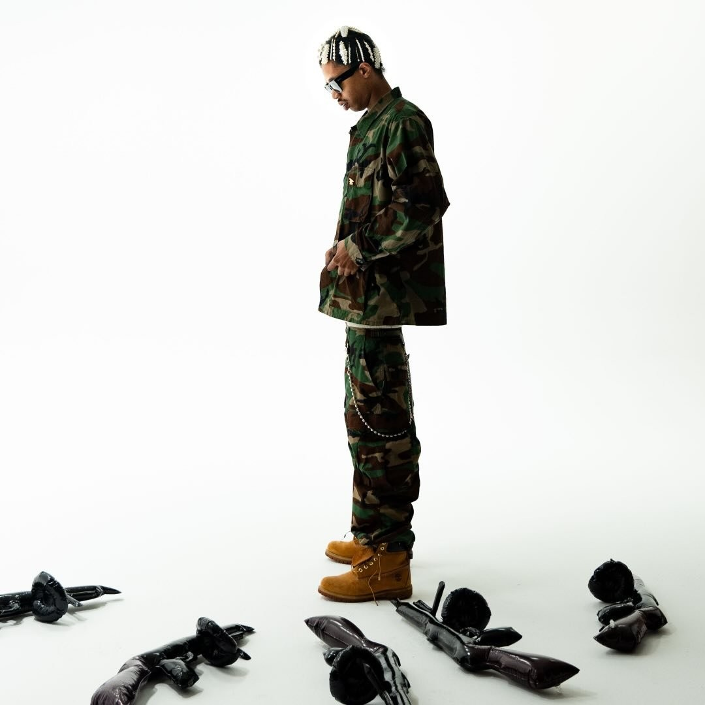
Thoto (@thxto_klk) is a Harlem rapper signed to AWGE, A$AP Rocky's own label. Thoto is half of the cloud-rap duo ThotTwat with ICYTWAT.
Rocky picked Thoto to open the Don't Be Dumb tour, the full run outside the Governors Ball date. The war-scene loop I built carried the entire set.
It started with a phone call from a good friend.
A story went up looking for people who make stage visuals and know 3D. Friend-1 spotted it within about ten minutes and called me to reach out ASAP.
I DM'd the contact, followed up by email, then found more of the right people on the team and reached out myself.
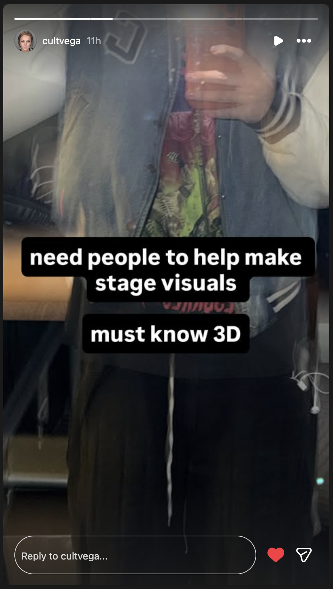
The creative got built in a group chat.
At 5:44 PM EST, two close friends and I opened a group chat to brainstorm. That is where the creative direction got built. Friend-1 steered the vibe right away: army, not SWAT. They dropped reference boards and handed me the client question list, hammering that the songs mattered most.
The direction came together fast: army not SWAT, grunge, heavy haze and smoke, glitchy strobe, a hint of CCTV. Soldiers with guns, selectively, with red lasers off them. Helicopter propeller blades as scene transitions. Then I steered it into what I would actually build.
Mood board
The board the three of us pulled together: red HUD scopes, surveillance and CCTV, black-and-white targeting, glitch, smoke. I built straight toward this.
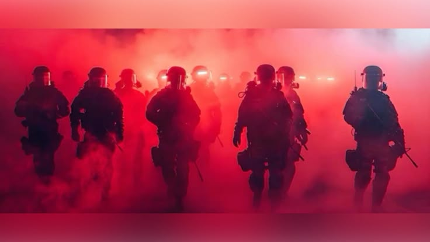
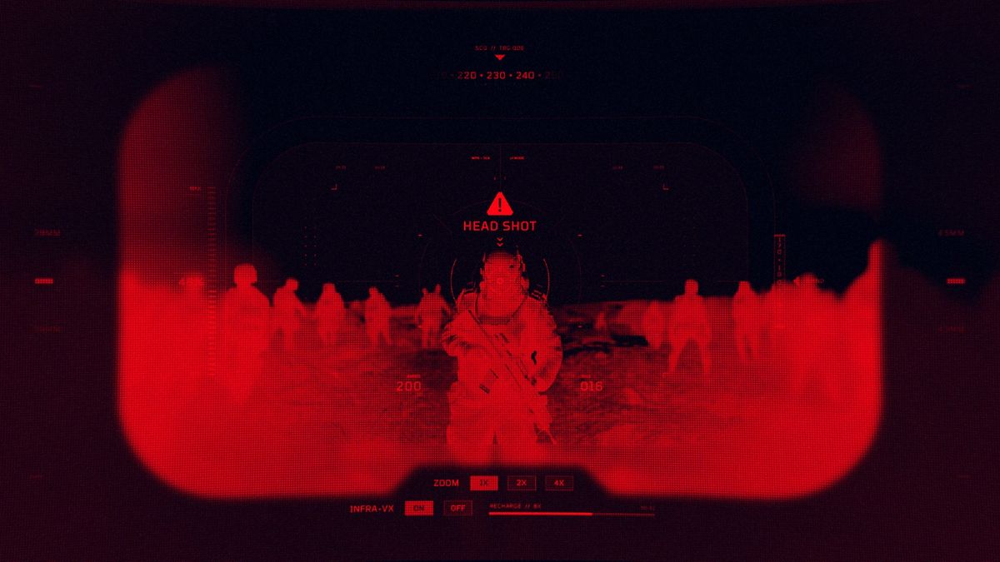
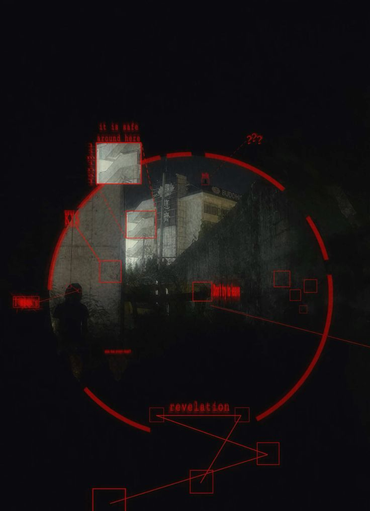

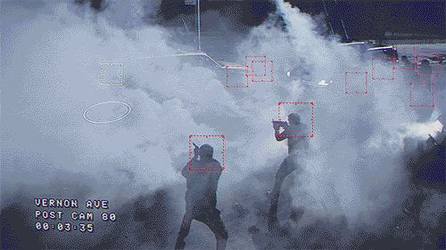
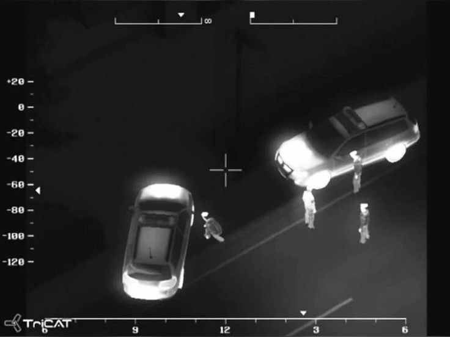
References collected on Pinterest, full credit to the original creators. View the full board →
I called the client before I touched a single file.
LXND bit within about five minutes on Instagram. I called instead of texting back. They told me exactly what they wanted: soldiers walking toward the camera, a battlefield war-zone vibe, and to swag it out. The visuals were for Thoto, an opener on the A$AP Rocky tour, covering Thoto's whole set.
On that same call I pinned down the environment, the colors, the soldiers' outfits, and sent the mood board to confirm direction. They locked it to a single QR code, and the visuals had to carry every song of the set, not score one track. LXND gave me the screen spec: 1920×1080, horizontal.
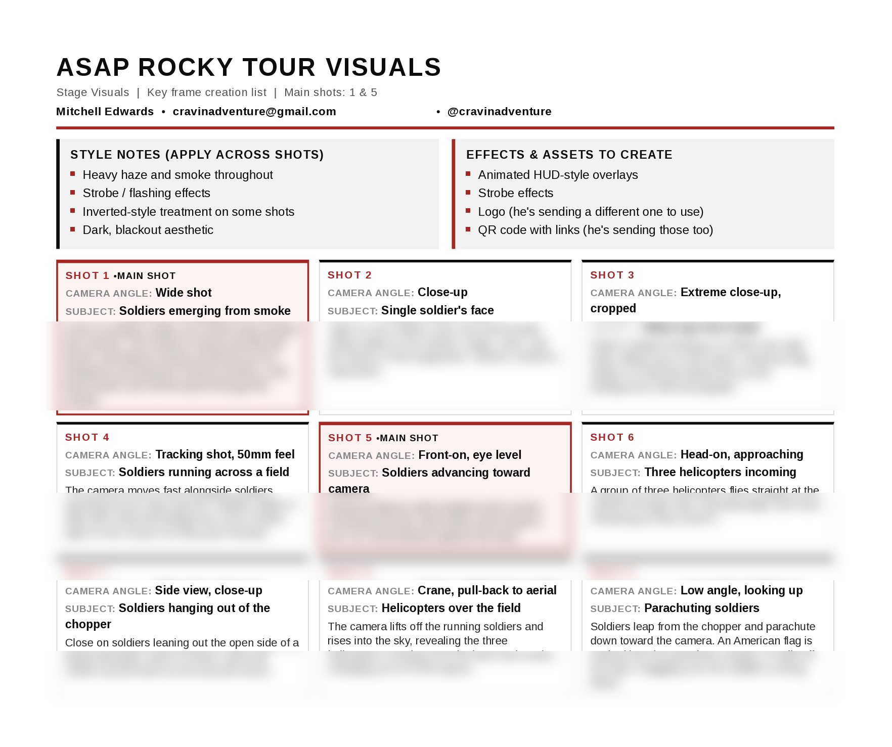
One AI couldn't do it. A better one could.
I started thumbnails with one AI image tool. Not realistic enough. So I jumped to a better one, ran the same prompts plus variations, and got stills I loved. Then I brought each still to life as AI video, directing it shot by shot. Usable motion, fast.
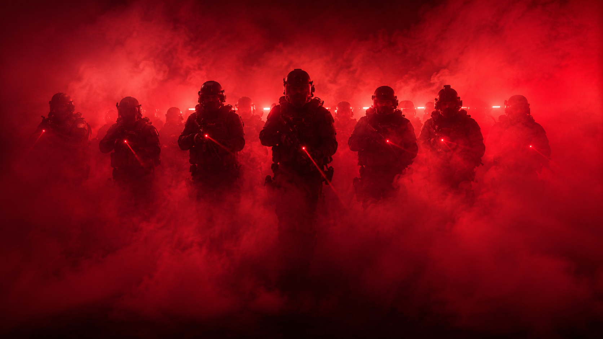
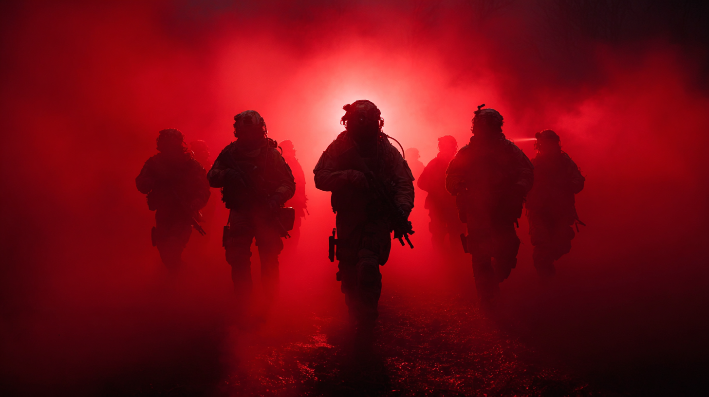
The shot list
I couldn't just have them walking at the camera, I needed real angles.
They said pop it on screen. I baked it into the world.
The QR codes came through as dark black-gray on transparent. To read clean against a dark scene, I vectorized one and recolored it white, then carved a space into a soldier's back vest and placed it there. I built an in frame and an out frame and fed both to a more powerful AI. Give that AI one endpoint and the code gets mangled and will not scan. Both endpoints keep it sharp.

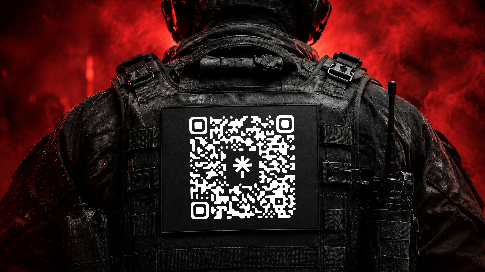
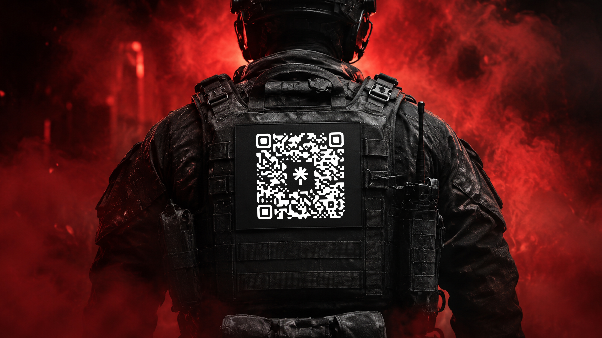
Then I timed the QR code.
They wanted the QR code up once a minute, but my loop was only 25 seconds with the code at the very end. In the final comp I duplicated the loop across the full 10 minutes and stripped the code off every other pass.
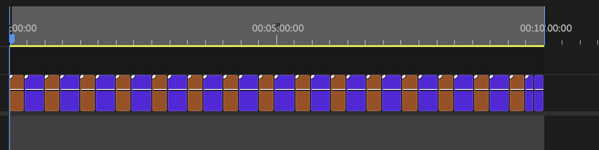
Built it all in red. Flipped it green in one move.
It started all red, following the Rocky vibe and my mood board. Then LXND and Casper both hit me to switch it to green, and I was already deep into red. My fix was two compositions: a movement comp holding the chopped clips, and a final comp at 1920×1080 matched to the pixel map. I dropped the first inside the second and applied a single hue rotate. Everything flipped in one move.
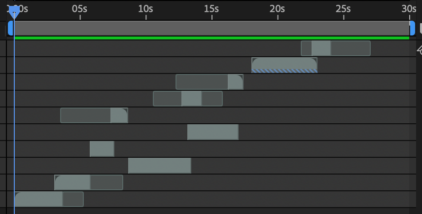
Then I hand-treated it.
In that same final comp I hand-treated the whole thing. Curves of calculated blur riding in and out. Monochrome grain pushed and pulled so it breathed like CCTV footage. Each shot fading up from black and back down, so the loop never cut harshly.
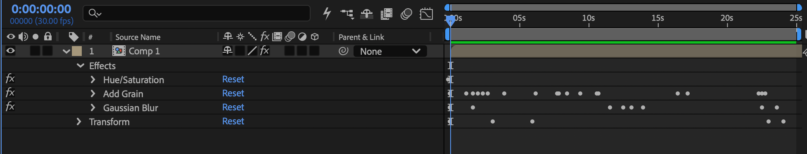
They only had a video of the logo. So I rebuilt it.
Casper, on the media team, only had the logo as a video with its own colors baked in, which did not match the look I was building. The source files could not come through in time. So I screenshotted a frame, lifted the logo out with my own software, and rebuilt it as a clean PNG and SVG. The custom 3D version ran out of clock and became a next-show item.
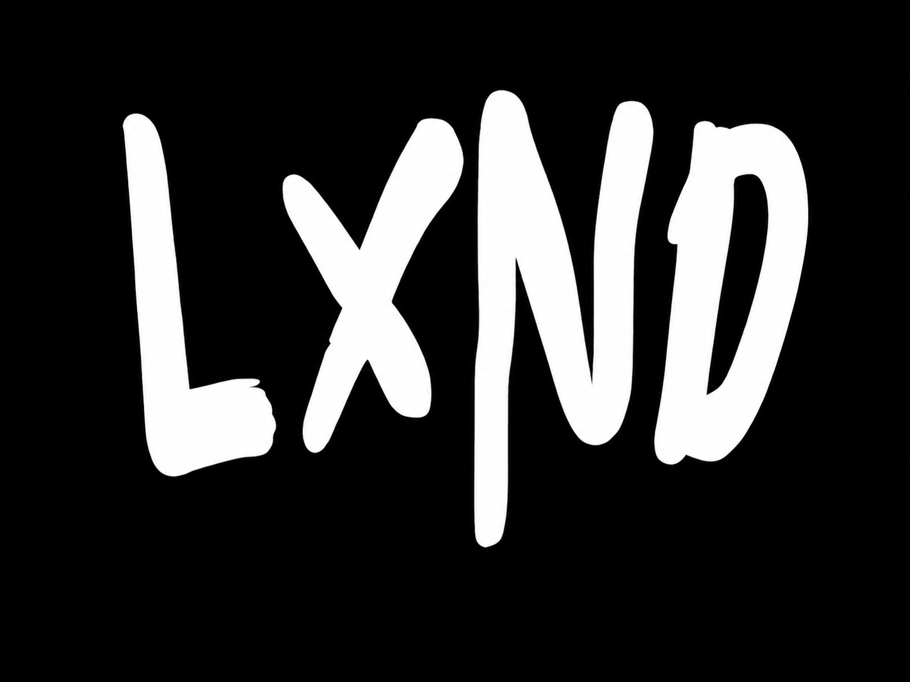
Files named, labeled, delivered. Nothing lost.
I exported the final loop, then a ten-minute version, the length of Thoto's set. I uploaded everything to their Dropbox, every file named so they knew which was which. Fully uploaded by 9:20 PM EST. From 5:44 PM EST to delivery, about a three-and-a-half-hour sprint.
That obsession with staying organized is why I built my agents the way I did. They read my raw files, rename them, sort them into a client file system, and set up the delivery folder. Even on a chaotic same-night turnaround, nothing got lost.
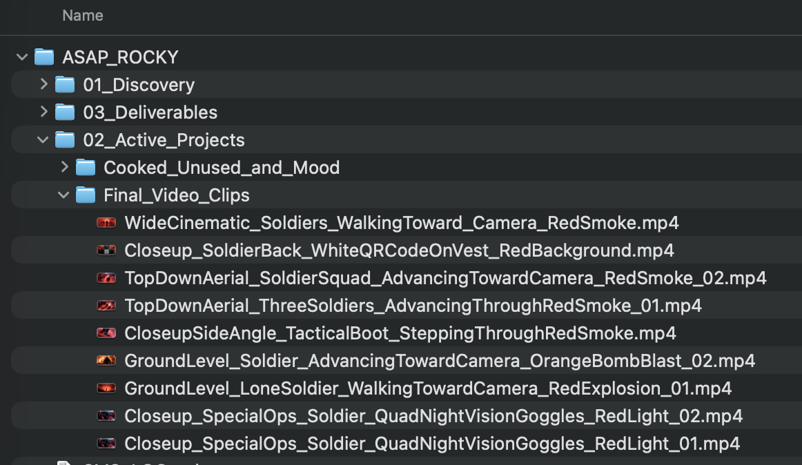

On stage, on the A$AP Rocky tour.
The loop ran for Thoto's full set. Soldiers walking toward the camera. The full compositing treatment. The in-world QR code showing up once a minute. All at 1920×1080, built and delivered in a single night.
What shipped, and what's next.
Shipped for the show
Hyper-real soldiers walking toward the camera. The full compositing treatment: red-to-green hue rotate, blur curves, pulsing monochrome CCTV grain, black fades between shots. A seamless 25-second loop expanded to a clean 10 minutes. The in-world white QR code baked onto a soldier's back vest, up about once a minute. All at 1920×1080, for Thoto's full set.
Locked for the next show
The LXND logo as a custom 3D asset with real-time environment lighting. The tanks. The helicopter and propeller-blade transitions. More clips, more glitch passes. Everything cut for the clock is prepped and ready.
Built fast, built together.
Who did what
Tool chain
↓
Image AI tools + Video AI tools (fast stills + motion)
↓
Vector software (QR code vectorized + whitened)
↓
Image-editing software (QR code on vest + in/out frames, logo pull)
↓
Video AI tools (in/out points, QR code integrity)
↓
Compositing software (two-comp, hue rotate, grain, fades, loop + QR code timing)
Friends Group Chat 5:44 PM EST → files uploaded 9:20 PM EST. June 25, 2026. Brainstorm to delivery.